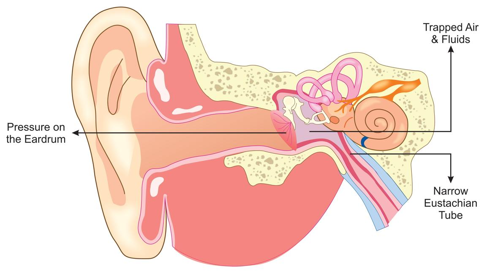

Ear barotrauma happens when you feel pain or discomfort in your ear because of a change in air or water pressure. This often happens when flying in an airplane, scuba diving, or driving through mountains.
Your ear has a small tube called the Eustachian tube that helps keep pressure equal on both sides of your eardrum. The Eustachian tube connects your middle ear to the back of your nose and throat. If this tube gets blocked or cannot work well, pressure builds up and causes pain or other problems in your ear.

You may notice:
Ear pain or pressure
Trouble hearing or muffled sounds
Feeling like your ear is full or clogged
Ringing in the ear, called tinnitus
Dizziness
Sometimes, fluid or blood from the ear if the eardrum is hurt
Your care team will ask about your symptoms and when they started. They may look inside your ear with a special light to check for redness, swelling, or a damaged eardrum. Sometimes, you may get a hearing test.
Most mild cases of ear barotrauma get better on their own. Your care team may suggest:
Pain medicine: Common types include acetaminophen, brand name Tylenol®, and ibuprofen, brand name Advil® or Motrin®. Tell your care team first if you take blood thinners, have a history of bleeding or stomach ulcers, or have a history of kidney or liver disease.
Decongestants: Your care team may recommend decongestant pills or nasal sprays.
Steroids: Sometimes, steroid pills or nasal sprays may be prescribed to help recovery.
Antibiotics: If you have an ear infection, your care team will give you antibiotics. Make sure to finish all of them, even if you feel better. If you stop early, the infection may not go away and can become harder to treat. Call your care team if you have any problems with your medicine.
Surgery: In rare cases, you may need surgery to fix the eardrum, open the Eustachian tube with a balloon, or drain fluid through a tube placed in the eardrum if other treatments do not work.
Try yawning, swallowing, or chewing gum to help open your Eustachian tube.
Use a warm washcloth over your ear for comfort.
Rest with your head raised on a pillow.
Keep your ear dry if your care team tells you to.
Avoid flying or diving again until your ear heals and your care team says it is safe.
People who fly often or dive underwater
People who have allergies, colds, or sinus problems
Children, because they have smaller and more horizontal Eustachian tubes
People with a history of ear infections or ear surgery
If ear barotrauma is not treated, it can cause:
Lasting hearing loss
Ongoing ear pain or ringing
A hole in the eardrum
Dizziness or balance problems
Infections that may need more treatment
You can help prevent ear barotrauma:
Swallow, yawn, or chew gum during pressure changes.
Use special earplugs made for flying.
Take a decongestant before flying or diving if you have a cold or allergies. Ask your care team if these medicines are safe for you.
Avoid flying or diving if you are sick or have a blocked nose.
Call your care team if you:
Have ear pain that does not go away
Notice hearing loss or ringing in your ears
See fluid or blood coming from your ear
Feel dizzy or off-balance
Have any new or worsening symptoms
Get help right away if you:
Have sudden, severe hearing loss
Have heavy bleeding from your ear
Feel very dizzy and cannot stand or walk safely
Have a high fever with ear pain
Thank you for trusting us with your care. We are here to support you and want you to feel your best. Contact us with any questions.
IF YOU HAVE A MEDICAL EMERGENCY, CALL 911 OR GO TO THE EMERGENCY ROOM.
The information presented is intended for general information and educational purposes. It is not intended to replace the advice of your health care provider. Contact your health care provider if you believe you have a health problem.
Last updated May 2025
© 2025 Mytonomy, Inc. All rights reserved.